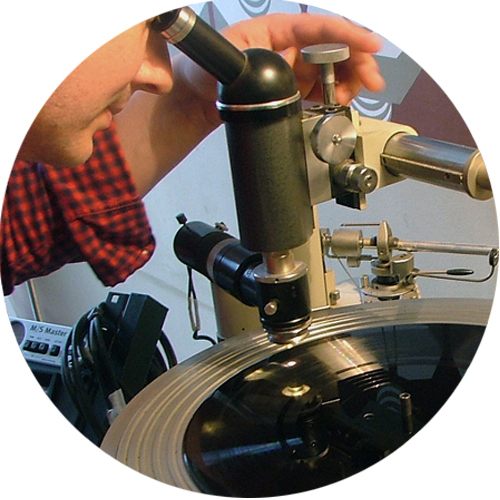

How Our Vinyl Records are Made
If you're totally new to vinyl records, and are clueless about where to start, you're in the right place!
(Click on the image below to view a video of how vinyl records are made!)

The Traditional Way: Pressing
Currently, most vinyl producers around the world make us of vinyl pressing. It is an old method of producing vinyl records, which hasn't evolved as fast as other technologies over the years. It's a time-consuming process, involving old machineries that often result to high defect rates, especially during the music recording stage due to the manual nature of this method. To learn more about this, visit HowStuffWorks.com.

The Vanilla Process
We have innovated this process by working around on the music recording phase of producing the vinyl records, enabled by our trusted suppliers and investments on top-of-the-line equipment. This allows us to have better control of the quality of music recording, which is the most vital process in the field. Hence, we have significantly lower defect rates and faster production times compared to the average pressing plants. We help you in the entire process of creating your musical masterpiece: from recording to label printing.
Options and Availability
We have bulk order options that go as low as 50 pieces, so anyone who aims to produce their music on vinyl can certainly do so now. If you're still starting out, you can free yourself of the stress of having to sell hundreds of copies just to breakeven, and spend more time on your art and music.